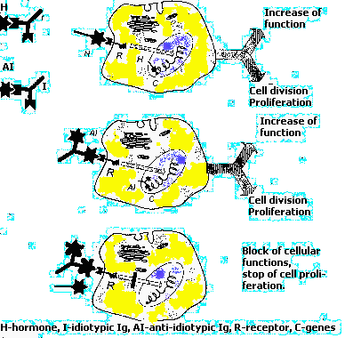

CATEGORY II HYPERSENSITIVITY – CYTOTOXIC REACTIONS
In cytotoxic reactions, known as II category of ITH, the tissue damage is mediated via antibodies towards intrinsic or absorbed cell membrane antigens. In majority of cases these are autoantigens, but sometimes – neoantigens. Unlike other forms of ITH, this one requires interaction between specific part of Ig – Fab-fragments and appropriate cell surface antigens. In anaphylaxis reaginic antibody, affixed to the cells with its Fc-portion, serves as a kind of receptor. But in cytotoxic process, vise versa, Ig quite often may have cellular receptors as their targets. The antibodies of cytotoxic reactions, most commonly, belong to complement activating IgG and IgM classes. As a result, most ordinary mechanism of tissue damage in these reactions is complement-dependent lysis (see Fig. ). Antibody serves as a kind of adapter for the process of cascade proteolysis, resulting in the assembly of the membrane attack complex that disrupts membrane integrity by "drilling holes" through the lipid bilayer. But, some other mechanisms of cytotoxicity also are implied in cytotoxic reactions:
- The target cells, coated with complement fragments, namely C3b and C3d, get involved in opsonization, which promotes their phagocytosis. For large objects and small phagocytes phagocytosis may be frustrated, with intensive exocytosis and perifocal irrigation of tissue with free radicals and other humoral cytotoxic effectors (see above).
- The cytotoxic Ig (mostly, IgG and in anti-parasitic immunity – IgE), via Fc-fragment and effector cell Fc-receptors, can mediate the attachment of various K-cells and NK-cells to target objects, thus promoting antibody-dependent cell-mediated cytotoxicity mechanisms –ADCC (see above). ADCC may be relevant to the destruction of targets too large to be phagocytosed, such as parasites or tumor cells, and it may also play some role in graft rejection. It is essential part of autoallergic cytotoxic mechanisms in ulcerative colitis, Krohn disease, chronic active hepatitis and autoimmune thyroiditis.
Although cytotoxicity is the most common consequence of the interaction between antibody and cell-bound antigen, this may not always be the case. According to the modern concept, the action of anti-cellular antibodies and autoantibodies does not necessarily cause damage or lysis of target cell. Antibodies, directed towards cellular receptors, due to triggering of receptor-mediated endocytosis mechanisms, will be rapidly internalized, bypassing the interaction with extracellular humoral or cell-dependent cytotoxic effectors. Moreover, in 2nd category of antibody dependent reactions Ig very are often targeted against intracellular and intranuclear antigens and irrelevant to surface or extracellular ones. As it was proven by A.Sh. Zaichik et al. (1973-1991), D. Alarcon-Segovia et al. (1973-1983), H. Sedlacek et al. (1983), M. Tsuneoka et al. (1986), J. Ma et al. (1992) - and many other groups, specific immunoglobulins are able to penetrate into cell cytoplasm and even into nuclei of living cells relatively quickly (see Fig. above).

In these cases the action of antibodies over target cells is, in fact, non-cytotoxic. Antibody serves as a signal, driving target cell growth and/or functions. The result of Ig action is antibody-mediated change of cell proliferation and/or switch on/off some cellular functional programs. Without target cell destruction, antibody may cause hormone-like effects (or block them). These mechanisms act for cell regulation (under normal conditions) or provoke derangement of regulation (in excessive action of these effectors). Antibodies towards cell receptors may block the bound of natural ligands with receptors, affect the ionic transport through receptors, and accelerate the receptor degradation. In all these cases the final effect of antibodies on cellular function or growth will be blocking. Quite customarily, the result of antibody-receptor interaction is a replacement of natural ligand’s function with antibodies (complete or partial, prolonged or short-termed). It is manifested in hyperfunction and/or hyperplasia of target cells. The antibodies may, for example, increase the production of a hormone or secret, accelerate cell division, induce hypertrophyc changes within non-dividing cells. These changes are not accompanied by inflammation.A variety of diseases result from signal non-cytotoxic interactions between cell receptors and anti-receptor antibodies. For example, in myasthenia gravis, muscle weakness results from impaired neuromuscular transmission brought about by anti-nicotinic acetylcholine receptor antibodies. Commonly, thymoma or thymonegaly accompanies the disease. In Craves’ disease (known in continental Europe as von Basedow’s disease), unknown stimuli (probably, excessive antiidiotypic response for Yersenia enterocolitica) cause the production of autoantibodies against protein and ganglioside epitopes of thyroid follicular cell TSH-receptors. Former ones stimulate thyroid growth, later ones promote the biosynthesis of thyroid hormones. As a result, thyroid gland displays goiter and primary hyperthyroidism. Many other extrathyroid clinical manifestations of this disease (pre-tibial edema, exophthalmus and different symptoms of ophthalmopathy, cardiomyopathy) are also though to be caused by still other autoantibodies of various tissue specificity.
NEXT CHAPTER
OR